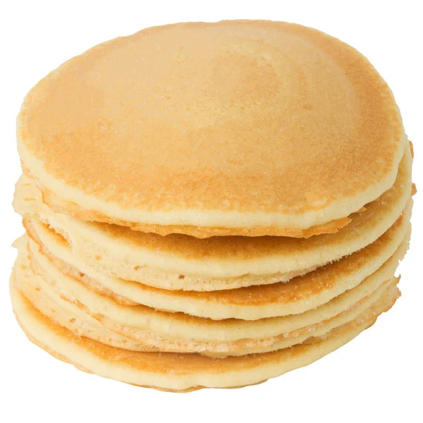

Pancakes

Description:
These are the hardest "basic" thing to master.
I halved the original ingredients on the box (2 cups water, 1 cup mix).
I can only eat so many pancakes in one sitting.
Ingredients:
- 1 cup of Pearl Milling Co. Complete Mix
- 3/4 cup of water
- Syrup if you aren't a barbarian
Steps:
- Gather your materials.
- Pour 3/4 cups water into a measuring cup. The Pyrex brand ones rule.
- Add 1 cup of the pancake mix gradually using either a fork or small whisk to stir it.
The key is getting rid of all the large lumps. Stop stirring once the large bubbles form.
- Let the mix sit and re-thicken for two minutes. During this time, you can heat your stove to a medium-high setting.
- Pour a small amount (about 3 inches in diameter) of mix into a pan. Use this test pancake to see how "ready" your pan/stove is.
- If the pancake bottom turns crusty and dark brown quickly, turn the heat down. Optimal stove temperature is key to a perfect pancake.
- Discard (or eat) your test pancake.
- Pour your first real pancake into the pan. It should be about 4-5 inches in diameter.
- Check the bottom with a spatula occasionally and flip it over when it turns golden brown. Press the fresh side down firmly against the pan.
NOTE: I usually flip them too soon and they come out too light/underdone.
- Once the other side is equally brown, remove and repeat steps 8 and 9 until all of the mix is used up.
- Serve 'em fresh off the stove with cold syrup for maximum magic.
Back to top
Back to homepage